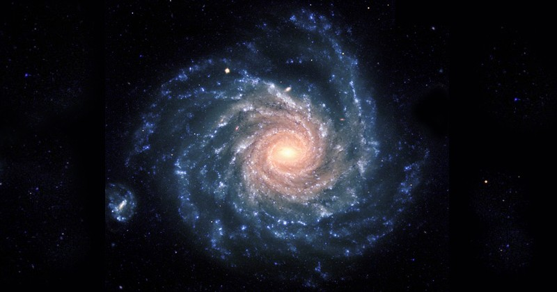
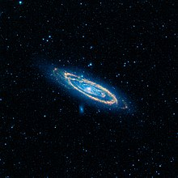
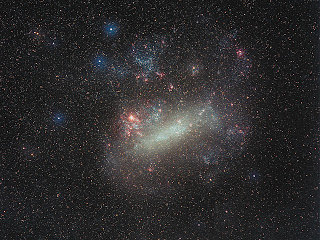
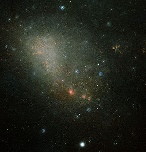
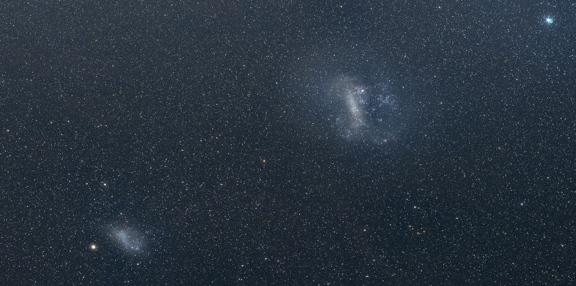

Índice
GALÁXIAS
Definição de Galáxia
Galáxia é uma palavra que deriva do termo grego galaxias kyklos que significa "círculo leitoso". Uma galáxia é um gigantesco sistema formado por milhões de estrelas e outros corpos celestes, que permanecem ligados entre si devido às interações gravitacionais.
O planeta Terra, assim como a maioria dos objetos visíveis no céu, a olho nu, está situado numa galáxia chamada Via Láctea.
As galáxias estão representadas no espaço de forma isolada sendo possível contemplar a olho nu, a partir da Terra, apena três delas:
Principais Galáxias
-
Via Láctea
A Via Láctea é uma galáxia espiral, da qual o Sistema Solar faz parte. Vista da Terra, aparece como uma faixa brilhante e difusa que circunda toda a esfera celeste, recortada por nuvens moleculares que lhe conferem um intrincado aspecto irregular e recortado. Sua visibilidade é severamente comprometida pela poluição luminosa. Com poucas exceções, todos os objetos visíveis a olho nu pertencem a essa galáxia.

-
Andrómeda
A galáxia de Andrómeda é uma galáxia espiral localizada a cerca de 2,54 milhões de anos-luz de distância da Terra, na direção da constelação de Andrômeda. É a galáxia espiral mais próxima da Via Láctea e seu nome é derivado da constelação onde está situada, que, por sua vez, tem seu nome derivado da princesa mitológica Andrômeda. É a mais larga galáxia do Grupo Local, que também contém nossa galáxia, a Via Láctea, a galáxia do Triângulo e aproximadamente 30 outras menores.

-
Grande Nuvem de Magalhães
A Grande Nuvem de Magalhães é uma galáxia anã satélite que orbita em torno da Via Láctea. O seu diâmetro é vinte vezes menor do que o da Via Láctea e o seu número de estrelas dez vezes menor. Embora parte da sua morfologia seja irregular, a Grande Nuvem de Magalhães tem traços de uma estrutura em espiral.

-
Pequena Nuvem de Magalhães
A Pequena Nuvem de Magalhães é uma galáxia anã próxima da Via Láctea. Classificada como galáxia irregular anã, a PNM tem aproximadamente 7000 anos luz de diâmetro, contém algumas centenas de milhões de estrelas e a massa de aproximadamente 7 biliões de massa solares.

Comparação entre Grande Nuvem de Magalhães e Pequena Nuvem de Magalhães

Bruno Sousa, A78997, Setembro 2019